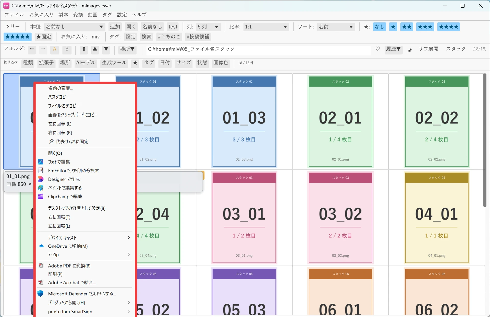
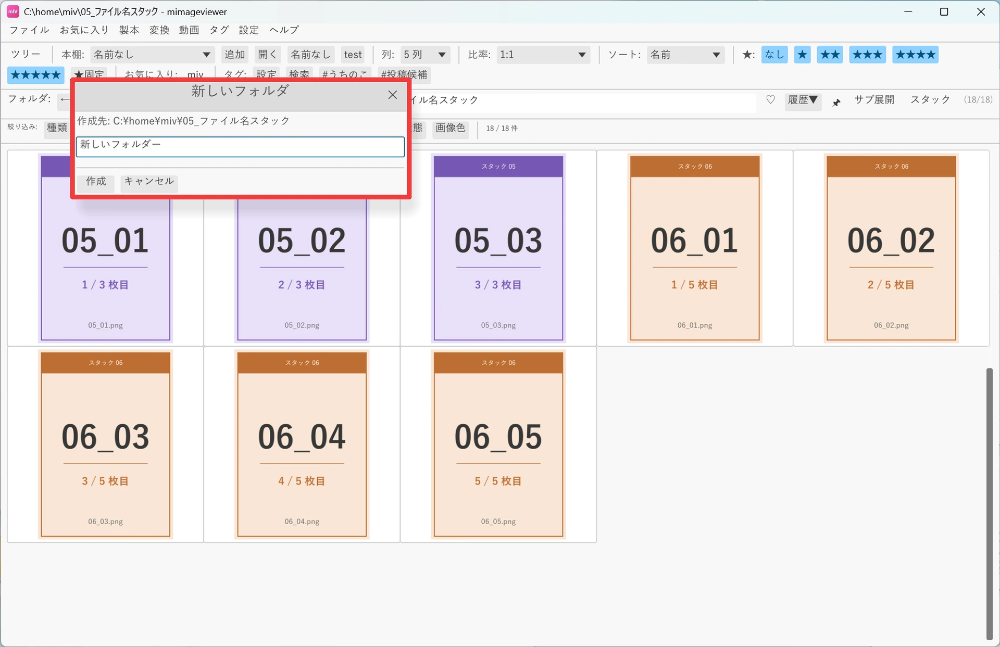
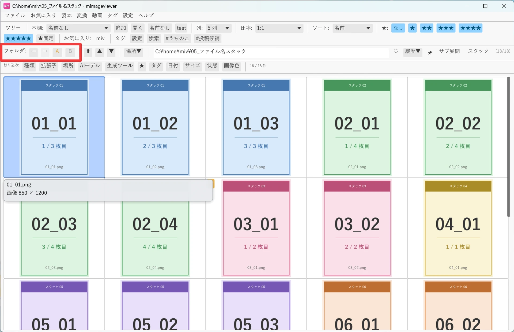

ファイルを整理する（コピー・移動・削除）
グリッドの右クリックメニュー、ドラッグ＆ドロップ、A / B クイックフォルダを使うと、 一覧を見ながら実ファイルをコピー・移動・整理できます。ZIP 内画像や PDF ページなど、 実体が通常のファイルではない項目には制約があるため、先に操作対象の決まり方を押さえておきましょう。
操作対象はカーソル位置とチェックで決まる
チェックした項目が 1 つでもあれば、その全項目が操作対象になります。チェックがなければ、 青いハイライトがあるカーソル位置の 1 件だけが対象です。複数をまとめて整理するときは、 Space や Shift+矢印で先にチェックします。
右クリックメニューでコピー・移動する
実ファイルまたは実フォルダを右クリックすると、メニュー上部に並ぶ mImageViewer の項目と、 区切り線を挟んで続く Windows 標準の項目でファイル操作を行えます。コピー・切り取り・貼り付け・ 削除などの Windows 標準の項目は既定で表示されます（環境設定の「右クリックメニュー」で切り替えられます）。 チェック済みの項目があれば、右クリックした 1 件ではなくチェック済み全体が対象です。
| やりたいこと | 操作 |
|---|---|
| コピー | 右クリックメニューの「コピー」。Ctrl+C でも実行できます |
| 移動 | 右クリックメニューの「切り取り」で切り取り、移動先で「貼り付け」。Ctrl+X → Ctrl+V でも実行できます |
| 名前変更 | mImageViewer の項目「名前の変更...」で新しい名前を指定します |
| 削除 | 右クリックメニューの「削除」。Delete キーでもごみ箱へ移動できます |

名前を指定してフォルダを作る
実フォルダの空いている場所を右クリックし、メニュー上部の mImageViewer の項目「新しいフォルダ...」を選ぶと、 ダイアログで名前を指定してからフォルダを作れます。作成後は一覧が更新され、新しいフォルダへカーソルが移ります。 メニュー下部にある Windows 標準の新しいフォルダー作成を選ぶと、名前の入力をスキップして新しいフォルダが作られるため、名前を付けてから作れる mImageViewer 側の項目を使うのがおすすめです。

ドラッグ＆ドロップでやり取りする
mImageViewer から外へドラッグ
実ファイルや実フォルダは、グリッドからエクスプローラなどの外部へドラッグできます。 チェック済みがあればまとめて渡され、操作はコピーとして扱われます。画像・動画・ZIP・PDF などの実ファイルと 実フォルダが対象で、ZIP 内画像・PDF ページ・ドライブ一覧などの仮想項目は外へドラッグできません。
外から mImageViewer へドロップ
外部からのドロップでは、ファイルだけを現在開いている実フォルダへコピーできます。 フォルダをドロップすると「フォルダのドロップは現在無効です」と通知され、コピーされません。 検索結果、ZIP / PDF の中、書き込み先になる実フォルダがない表示でも受け付けられません。
A / B クイックフォルダでコピー元とコピー先を往復する
フォルダバーの A / B ボタンで、2 組の場所と履歴を切り替えられます。 A をコピー元、B をコピー先として開いておけば、ボタンを押すだけで往復できます。
- A / B は、それぞれ最後に見た場所を別々に保持します
- ドライブごとの最後の位置も A / B で別々に保持します
- 戻る / 進むの履歴も A / B ごとに独立しています
- ZIP / PDF の中を見ていた場合は、その内部ページではなく入れ物の場所を記憶します
